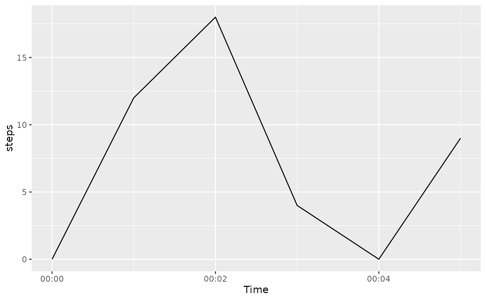
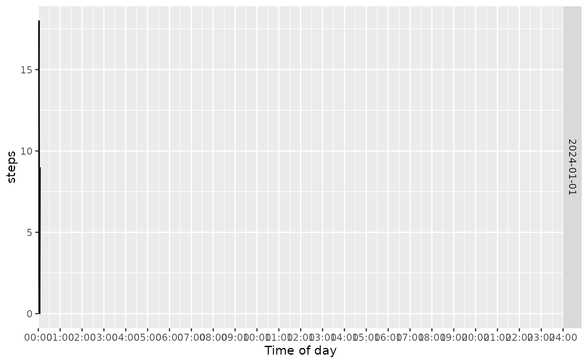

acti_plot_time() draws a time-series plot for a minute-level activity
measure, such as steps or activity counts. acti_plot_day() aligns the data
by time of day and places each date in its own facet row.
acti_plot_heatmap() provides the same date-by-time layout as a heat map.
Usage
acti_plot_time(data, value, time = time, breaks = NULL, ...)
acti_plot_day(data, value, time = time, breaks = "4 hours", ...)
acti_plot_heatmap(data, value, time = time, breaks = "4 hours", ...)Arguments
- data
A data frame containing a timestamp and an activity measure.
- value
The activity-measure column, supplied unquoted or as a string. For example,
stepsor"counts".- time
The timestamp column, supplied unquoted or as a string. It is
timeby default.- breaks
A single duration such as
"1 hour","4 hours", or"15 mins". It controls x-axis spacing. UseNULLfor ggplot2's default on the full-time plot or no specified breaks on aligned plots.- ...
Additional arguments passed to the primary geom.
Details
Data are prepared with actibase::acti_separate_times(), which recognizes
the timestamp conventions used by activerse packages and adds date and
time-of-day variables.
Examples
activity <- data.frame(
time = as.POSIXct("2024-01-01", tz = "UTC") + 60 * 0:5,
steps = c(0, 12, 18, 4, 0, 9)
)
acti_plot_time(activity, steps)

acti_plot_day(activity, "steps", breaks = "1 hour")
